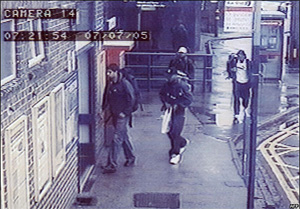

1000 DAYS OF THEORY
Tell Us What's Going to Happen
Information Feeds to the War on Terror
Samuel Nunn
We want to know things before they occur. Anticipate, react, prevent. This idea is embedded not only in counter-terrorism policy, but in the
cultural narratives produced by television and cinema. Television programs such as 24 or CSI, and movies such as The
Conversation, The End of Violence, Minority Report, and The Siege are self reflexive mirrors of the U.S. war on terror.
Through tricky technology systems like the Multi-State Anti-Terrorism Information Exchange (MATRIX) and Terrorism Information Awareness (TIA) and
Regional Information Sharing Systems (RISS) and TIPOFF and AFIS and VICAP, America seeks policies and programs -- read this as machines and software -- that
will anticipate terrorist attacks in order to stop them before they can occur.[1] The desired outcome is
complete deterrence. If this outcome was achieved, it would be the most mighty feat of prognostication and prevention ever conceived.
The reason? Doing so would require the real time synthesis and analysis of volumes of data equal to something like the number of stars in the
universe. Criminal justice technology systems produce voluminous information flows. Billions of bytes of data are constantly on the move among police
agencies describing individuals, their criminal histories, assets, debt, locations at particular times, purchase patterns, biometric identifiers
(fingerprints, photographs, DNA samples) and other aspects of the people or the activities they are thought to have performed. At any given moment,
thousands of inquiries are sent through dozens of regional, national, and international systems seeking answers to questions about people's identity,
where they are, what they have done, or what more other agencies and agents know about these individuals. In 2005 the FBI's National Crime Information
Center (NCIC) averaged 4.5 million inquiries per day.
Within this storm of data, terrorism is the boogeyman of the 21st century. And there is only one way to assuage our fears of sudden, brutal
terrorist attacks: convince us that we will always uncover the conspiracies before the explosion, always know who the perpetrators are before they
act, always stay one step ahead of them, always arrest them before the carnage. It is a process identified by Richard Grusin as premediation: a
shift of focus to controlling the future and stopping attacks before they occur or, more simply, profiling the future.[2] It is the premediation of the future, an advance word about what is going to happen. This model helps us accept 9/11 as an
interruption or aberration. Looking back, we had the pieces if only someone had put them together: the plot was within our grasp. Heroic FBI
agents wrote memos, villainous or incompetent supervisors ignored them or, worse, destroyed them.[3]
Mohammed Atta is on the surveillance tapes; why didn't someone see him? Ziad Jarrah, pilot of UA flight 93 (destined for a Pennsylvania farm
field, and now the subject of an A&E made-for-cable movie, Flight 93 and Hollywood's United 93), gets a speeding ticket in Maryland on
September 9th; why didn't someone stop him? Someone always knows. The truth is out there.
The U.S. war on terror places stock in this belief: if we know who the terrorists are, we can capture and contain them, prevent them from putting
their schemes in play. If we know a sleeper cell is operating in a city's neighborhood, the authorities can place the cell under surveillance with
visual monitoring, communications interception, dialed number logs, video taping, credit card purchases, and other transaction footprints used to
build a virtual sphere of information control. Alternatively, we can figure out what terrorists 'look like' through profiling, find them, surveil
them, uncover their plans, and incarcerate them. We will process information to prevent terrorism.
Building on a theoretical foundation of panopticism and social control, Kevin Haggerty and Richard Ericson coined an appropriate concept for the
variety of technological systems used by state and non-state entities to monitor citizens: the surveillant assemblage.[4] The assemblage is composed of many discrete technological forms used to observe and infer patterns of behavior in the interests
of control, investigation, and crime prevention. This includes closed circuit TV, governmental and corporate data bases, data mining and synthesis
software, electronic surveillance systems, data-based profiling techniques, scenario analysis, the integration of criminal justice data bases,
biometric identifiers, and so on. Information feeds to the war on terror can be conceived as representative components of a surveillant assemblage -- a
combination of surveillance tools used for various forms of social control, in particular those devoted to uncovering terrorist and criminal
conspiracies and preventing violent crime. It is the set of surveillance components pulled together to provide information used to detect or stop
crimes of violence.
Surveillant assemblages have been depicted in various ways by films and TV, and it's possible that a few movies and television shows can be read as
information feeds to the war on terror. Sometimes we use technologies to prognosticate and prevent violence, the theme of The Conversation,
Minority Report, and The End of Violence. The preventive scheme of Minority Report is the most direct: you're under arrest for
the crime you almost committed. But at other times, in the event violent actors strike before we can stop them, there are policies, plans, and
contingencies -- ways to make us safe again, tactical technologies. That's the hard-edged, reactive theme of The Siege. And for those situations
where a crime is committed, at least one TV program presents an argument that our technologies will uncover truths that no one but the perpetrator
could know. That's the theme of CSI.
These films show how humans generate and process surveillance information into fuel against crime and terror (as they perceive it), and offer
cultural representations of the surveillant assemblage. The examples examined in these films and TV suggest a complex relationship between the social
and political realities of wars on crime or terror or drugs and their representation in film and media. The relationship is based less on whether one
or the other is a better reflection of 'reality' than the idea that both filmed renditions and police policies are drawn from dominant cultural
beliefs about criminal and terrorist behaviors. Shortly after 9/11, a brigadier general chaired several meetings of selected Hollywood writers,
producers, and directors to develop terrorism scenarios that had not been considered before, as potential fuel for the development of preventive
strategies.[5] Hollywood imagination would supply the fuel for actual anti-terrorism tactics. The meetings
were held in Los Angeles at USC's Institute for Creative Technologies, whose operating revenues come in large part from military contracts. James
Castonguay called meetings like this the "cultural production of the war on terror."[6] Numerous Hollywood
productions and planned television shows were altered or postponed after 9/11 because of government concerns they would spark creative criminal
imitation and intensify public fears of future attacks. Causality is always a bit mixed up in the blend of make-believe and reality.
The surveillant assemblages depicted in film and TV create another source of fear in society -- the fear of all-encompassing 24/7 observation by
unspecified others, usually the 'state', and the subliminal belief that there must be some reason for all this surveillance, some kind of danger out
there against which we must be protected. This fear feeds social acceptance of the very technological systems we ostensibly fear -- as well as the
perceived likelihood of criminal attacks against which they are arrayed. Because films and TV offer popular culture's perceptions of crime and terror,
their visual and narrative messages -- and their strength -- are especially complex feeds to the war on terror.[7]
Stopping crimes in action and hiding in plain sight: The End of Violence
Machines that can monitor peoples' activities in space are part of modern law enforcement technology.[8] Surveillance systems are important, and we should quickly recognize that any reasonably sophisticated monitoring system -- whether
wiretaps, video surveillance, or computer eavesdropping -- potentially generate so much information they challenge interpretation. Nevertheless, one key
to uncovering the plot of conspiracies is interpreting the information that has been collected in ways that anticipate the commission of a crime and
allow law enforcement agents to stop the plot before execution. Vast, disconnected data bases exist from which investigators can draw criminal intent.
Information from wiretaps, snitch reports, BOLOs ('be on the look out'), watch lists, criminal incident descriptions, and many other sources are the
data that will feed prevention efforts. But how can all this information be interpreted in a way that defines the actions to be taken? Who sits and
watches, then decides to do something?[9]
In The End of Violence (1997), the Los Angeles basin is under surveillance from a sophisticated closed circuit television (CCTV)
system operating from Griffith Park Observatory. The prophecy of the film is that sophisticated technological surveillance systems will evolve to
monitor the public and private movements of individuals, and create intelligence about what they might be doing. It is a technology that reveals
intimate details. Knowing intimate details allows the system operators to anticipate the crimes they might commit (or the actions they might take),
and to stop them.[10] In the movie, CCTV monitors spaces, pinpoints disorder, and has the capacity to
direct potentially fatal rounds from a weapon connected to the system.
A producer of popular violent films, Mike Max, receives a manuscript that describes the deadly surveillance system, its capacity for targeted
assassination, and its political implications. Max pays little attention to the document. At that point, it's not clear who sent it to him, but later
it appears the system designer, Ray Bering, probably originated it. The surveillance system manager, Brice Phelps, wants that information rescinded,
and is willing to kill Max to get it. Max is snatched away by two thugs in front of his house, but then escapes from the two kidnappers intent on
killing him after surveillance cameras spot the activity (a scuffle between the hit men over Max's bribery offer not to kill him), focus in, then
terminate the two attackers using an automated high-power rifle. Max flees. Later, Ray Bering is killed by the surveillance system (under the
direction of Brice Phelps) just as he is about to contact the police officer, Dean Brock, who was investigating Max's disappearance. Max stays out of
touch and drifts away from his past life.
Before the kidnapping, Max's primary links to his wife and business associates were electronic -- cell phones and emails (sitting by his pool, Max
gets a phone call from his wife, sitting in her bedroom 100 feet away, to say she's leaving him) -- and Max embodies the notion that identity and
location are the product of the electronic signatures of cell phones and internet connections. Who and where you are is discernible by your electronic
transactions in cyberspace. Accordingly one can never hide, and with the right tools -- big computers, big software, and big data bases -- government
officials argue that they can build the ability to interdict criminal behavior before it happens.[11]
This phenomenon has been referred to as "the disappearance of disappearence."[12]
Despite this, and like the proverbial terrorist sleeper cell, people can hide themselves inside complex surveillance systems by being 'invisible'.
Mike Max does so by taking up with a clan of Latino landscapers, who exist beneath the radar screen of electronic monitoring and remain invisible to
mainstream society. The workers are part of the generic background -- the immigrant workers never become visible in the figure-ground. Max's disappearing
act works. He hides in plain sight at the very place he has fled. Once he's 'off the grid' of identity numbers (phones, credit cards), he is hard to
track. His travels with Latino laborers confound attempts to locate him.
If there is any other way for Max and the Latino laborers to be read, it is as the contemporary model of the terrorist cell: a group existing
without being seen. The message of The End of Violence anticipates but does not bode well for technological systems that hope to find sleeper
cells by mining their credit transactions (they bought ammonium nitrate and fuel oil), or intercepting their cellular and wireless communications. But
such systems require assembly and careful analysis of information. If you don't leave information trails, tracking systems can't find you. Mike Max's
success remaining out of sight with the Latinos undercuts a view that current anti-terrorism policies will detect 'invisible' sleeper cells within the
U.S. From the perspective of 2005, it's possible to see the Latino laborers as doubles for the hidden terrorist cell.
The End of Violence was released in 1997, but its speculation about ubiquitous, all-seeing video surveillance systems was more a documentary
observation by 2005. For example, within days of the 7-July-05 London bombings, public surveillance tapes produced a visual portrait of the four
attackers.

SOURCE: wikipedia.org[13]
Still photographs and CCTV footage of Tim McVeigh, the Oklahoma City bomber, were taken on April 17, 1995 at a McDonalds close to the Ryder's outlet
where he rented the truck destined to be his VBIED.[14] This was approximately 48 hours before he
prosecuted the attack on the Murrah Building. The portrait of four suicide bombers entering London's Luton tube station at 7:21:54 joins another
famous last chance: Mohammad Atta passing through the Portland, Maine airport at 5:45:13 on September 11, 2001.
SOURCE: worldpress.org[15]
CCTV systems can picture the reality of terrorism conspiracies. Unfortunately, it is a reality not prevented.[16] In London, the good news was we had pictures of the suicide bombers before they struck. The bad news: who knew what they were
doing? Beyond the four of them, it's not really clear. A May 2006 report on the July 7th bombings claims the four operated on their own with little or
no other infrastructure.[17] The police didn't know them -- they were initially called 'cleanskins' by the
British authorities, although the 2006 report admitted British intelligence knew something about two of them. Nevertheless, here was the model
sleeper cell, largely unknown to law enforcement. The worst news: even if somebody had known at that moment (7:21:54 a.m.), what could they have done?
At the conclusion of The End of Violence, Ray Bering, who has been depicted as either the designer of the surveillance system or one of its
operatives (it's not clear which), is killed by the weapon controlled through his system. This surveillent assemblage does not end violence, but is a
mechanism that furthers the use of violence for social control. Thus, the information feed from The End of Violence is broad-ranging. It
depicts a panoptic system tied to a powerful, accurate, largely invisible weapon that can strike individuals down from remote locations. It's an
automated sniping system that defines others as enemies of the state and executes them. Perhaps the problem in London was an incomplete
assemblage -- they were missing the sniping system that would have shot the suicide bombers at the tube entrance.[18] Somebody must have known they were coming. It was there on the screen.
If it hadn't been prevented, it wouldn't have happened
Another information feed to the war on terror originates from the fertile, drug-driven imagination of Philip K. Dick. The goal of the high tech
systems depicted in Minority Report (2002)[19] is to stop homicides before they occur. This is
another 'end of violence' scenario, embodying both general deterrence and incapacitation goals of contemporary punishment -- what David Garland refers to
as "the new apparatus of security and prevention."[20] The Department of Pre-Crime uses human-machine
socio-technical systems linking three psychic empaths to a future murder notification system. But this is a surveillant assemblage of a whole other
kind from The End of Violence. The empaths experience visions of the future, and offer a 'consensus' view of the anticipated murder. (A
minority report is produced if consensus is not achieved.) The vision is transferred via high-tech multi-image interactive display screens to police
officers who are experienced translators and observers of empath images. They are observed by a three member panel of judges as well as their own
colleagues. The name of the (future) perpetrator is carved into a red wooden ball, thus the announcement as the "pre-cogs" generate their vision: "we
got a Red Ball." The red ball puts everyone on alert a crime is about to occur.
Locational inferences drawn from the visions by the police translators are relayed to pre-crime SWAT teams, who narrow down the targeted attack by
traveling across Washington D.C.'s metro landscape. Upon finding the place of the yet-to-be committed crime, they stop the crime before it happens. Or
put more elegantly, Pre-Crime is designed to "prevent the future from becoming the past."[21] But like
the care taken by undercover operatives to avoid giving suspects an entrapment defense, Pre-Crime agents have to interrupt the to-be-prevented murder
at just the right moment. The Pre-Crime Unit applies less-than-lethal weapons (sonic projectiles, vomit sticks) to subdue the red ball. The offender
is arrested and placed into suspended animation, sentenced, then stacked inside a warehouse of vertical storage pipes that could be called
less-than-lethal incarceration. The jury is the panel of judges who observed the pre-crime bust. Using the technologically-enhanced record of the
future murder that was prevented, offenders are sentenced on the basis of not committing the crime they would have committed had the
pre-crime detection system not been in place.[22]
That is a neat way to define and measure crime prevention. It is extreme, topsy-turvy risk-oriented policing supported by advanced information
technologies, an ongoing development in 21st century law enforcement.[23] Minority Report's model
is machine-mediated crime prevention on steroids. Law enforcement uses technologies and techniques to protect targets at highest risk of criminal
attacks. Policing becomes risk management: show us the valuable targets, and they will be defended. Minority Report reflects a state of phantom
existentialism. Being convicted of a crime you didn't commit becomes a fundamental part of the criminal justice system. I am imprisoned for a new
class of crime: the crime I would have committed.
In an increasingly risk-averse society, this is not such a strange concept, and the 21st century war on terror is trying it on for size. The same
principle now holds for terrorism suspects held as enemy combatants or material witnesses. They are held sans habeas corpus for long periods,
de facto guilty of crimes they had not (yet) committed. This cast of characters includes a Florida college professor, Jose Padilla, Zacarias
Moussouai, and other conspirators caught before executing their acts.[24] And in another iteration of
Minority Report's less-than-lethal incarceration, the U.S. sometimes 'renders' its terrorism suspects to other countries with "more advanced"
methods of interrogation than can be used domestically.[25] It's an alternative version of the "round
'em up" model: arrest enough people for the crimes they might commit, obtain confessions for crimes that might be planned, and pretty soon a state of
complete incapacitation might exist.
How do you understand what you hear?
If interpretation of technologically-enhanced psychic visions lies at the heart of Minority Report, the art of synthetic inference is
showcased in The Conversation, another information feed promoting anticipation in the interests of prevention. Like The End of Violence
and Minority Report, how operators interpret intercepted communications ultimately drives the system. Every surveillant assemblage is based on
interpretation by technicians who are monitoring communications in cell phones, bugs, computers, or CCTV video consoles. Somebody must interpret the
information picked up from surveillance to inform law enforcement or, in the case of The Conversation, to eavesdrop private conversations for a
client. In the film, an audio recording obtained through great technical virtuosity is painstakingly reconstructed, and then interpreted. Harry Caul,
a private surveillance expert who recorded, edited, and produced the conversation (from inside the challenging, chaotic aural environment of a crowded
urban park), believes a crime will occur, and based on his (inaccurate) theory of victims and villains, intervenes and discovers the causality he
inferred was misinterpreted. The crime could not be stopped even though events were anticipated. Those he thought victims were actually perpetrators.
After all his efforts, an unsuspected crime occurs, one not thought of. This is the failure of preventive surveillance systems.
In an era when law enforcement and intelligence agencies internationally are intercepting millions of telephone, fax, email, and other satellite
communications on a daily basis, the challenge of accurate interpretation is rarely explored. The Echelon system, managed by the western powers (U.S.
Britain, New Zealand, Australia, and Canada), gobbles up international satellite communications, creating an astronomical volume of information
reportedly 'interpreted' by computers of the U.S. National Security Agency.[26] It is an actual global
system that remained unmentioned in one of the only movies to ever focus on the NSA, Enemy of the State (1998). In the midst of revelations the
U.S. engaged in administratively-driven domestic surveillance -- warrantless electronic eavesdropping in the U.S. since fall 2001[27] -- the public is given information that implies deadly terrorist plots are prevented, but few trials
come to fruition and those that do are often based on a weak evidentiary trail. And it is never clear to what extent extensive technological
monitoring systems play a role in breaking these conspiracies. Even though prosecutors had compiled mountains of wiretap information on a professor at
the University of South Florida, Sami al-Arian, since 1994, the U.S. attorney failed to gain a conviction in eight of the 17 counts, and the jury
deadlocked on the remaining nine.[28] Nonetheless, shadowy plots are reportedly stopped. New York City's
Brooklyn Bridge was going to be destroyed by an Ohio truck driver named Iyman Faris. Another man in Columbus, Ohio, Nuradin Abdi, was indicted for a
plot to explode a bomb at a shopping mall, although the indictment was unclear as to the actions taken by the men to actually implement their plot -- in
short, it didn't matter that they weren't likely to pull it off. Cases that are brought are lengthy, expensive, and contentious, subject to many
different interpretations. Few are slam-dunks and many wither away, such as the trials of Jose Padilla and Zacharias Moussaoui, the 'enemy combatants'
squirreled away in Iraq and Guantanamo, and those material witnesses 'rendered' to other countries for questioning and interrogation. The truth of
terrorist conspiracies is as hard to interpret as The Conversation.
Interestingly, The Conversation did not involve formal law enforcement. Instead, it is set in a shadow world of corporate security
consultants -- another contemporary scene on display in Iraq and the war on terror, with privatized bodyguards, private security details, Halliburton,
Kellogg-Brown-Root, and the private soldiers employed by Blackwater USA.[29] But in The
Conversation, it did not matter whether the intelligence was generated by a public servant or a private entrepreneur. Harry Caul did a yeoman's
job of collecting and collating the conversation, but he interpreted it out of context. He recognized a pending act of violence, but could not stop
it. Caul's preventive impotence is framed differently by John Turner: "information gleaned from surveillance practices does not necessarily produce
knowledge ... surveillance technology and its technicians may be more directly involved in creating reality rather than making a record of it."[30] This is a permutation of the uncovered conspiracy -- the busted plot -- that is a primary target of US
anti-terrorism programs. The Conversation holds little constructive hope for homeland security arguments that we can prevent bad things from
happening if only we interpret the information correctly.
Revising the scene of the crime
We are led to believe we always leave information trails, that there are those who have the heightened senses of psychic bloodhounds who can find
our trail and find us. Another information feed to the war on terror is our belief that the mediated crime scene investigator -- the forensic
specialist -- can always de-construct and re-construct crimes in ways that lead to their solution. This is the idea of CSI: we will use data to
identify perpetrators, solve crimes, make arrests. In CSI, it is working backward to reconstruct an event -- becoming all-knowing in reverse.
The lesson is simple: once a crime has occurred via murder or bombing or arson, the physical evidence left behind can be identified, imaged,
categorized, sorted, and analyzed to create hypotheses about unwitnessed crimes. We will apply forensic approaches to bombing sites, the place of
terrorist crimes. The guilty parties will be deduced from an analysis of evidence. In the 7-7-06 London bombings, the "bomb factory" at 18 Alexandra
Grove contained forensic evidence physically connected to three of the four suicide bombers, and there were numerous CCTV images of all four suicide
bombers, separate and together, that ultimately placed them at London's Luton Station. The official report identified where the four bombers sat on
the subway trains and bus -- based on forensic evidence. Data re-create the event, and the investigators reveal, picture, and divine the truth from the
data they find and interpret. This is the same as preventing an attack before it occurs, but in the opposite direction.
On the other side of the TV screen in Washington, D.C., the Terrorism Information Awareness (TIA) program crafted by the U.S. Department of
Homeland Security, to be fully developed by the Defense Advanced Research Projects Administration (DARPA), was a data mining program that would use
pre-conceived scenarios of terrorist attacks to guide the data search and look for data transaction patterns that might be signifiers for planned
terrorist attacks. Ultimately, TIA's potential for sinking western conceptions of personal privacy was the reason it sunk. But for both CSI
and the deposed TIA program, the idea is to use data to solve problems. You create pictures and scenarios and think about how to interpret and react
to them. It is an exercise in reverse synthesis.
U.S. anti-terrorism operatives formulate scenarios of terrorist attack, then the data signatures these attacks might generate are hunted nationally
or internationally in a vast field of computerized purchase, travel, lodging, and movement transactions. By 2005, the federal homeland security
infrastructure produced a short list of likely terrorist incidents. These included an emergency vehicle-borne improvised explosive device -- a
VBIED -- within a sports stadium; trucks spraying anthrax spores on city streets; pneumonic plague germ releases in bathrooms of airports, train
stations, and sporting events; and others.[31] [32] The
federal DHS calls them "all-hazards planning scenarios." Fifteen scenarios involving chemical, nuclear, biological, radiological (CNBR), explosive,
and cyber attacks are profiled.[33] The preventive idea was to figure out how to anticipate such events
by uncovering the precursor actions that perpetrators would have to perform. As James Elroy might put it, 'Police pinpoint perpetrators performing
precursor potshots'.
Ironically, read through the perspective of CSI, these scenarios provide a blueprint for terrorists. The scenarios describe the general plan
for successful CNBR and explosive attacks, setting out the basic plot and resulting damage from each attack, assuming each one is at least partially
successful. If terrorists take the CSI approach after closely considering the various scenarios, they can move in reverse from their
anticipated crimes to a better designed plot that defies prevention.[34] This is at least one inferences
to be drawn from Brian Jackson, et al's RAND Corporation report on group learning among terrorist groups.[35] Tactics mutate.
In a looking glass world, this is the way of CSI: given a crime, use forensic technologies to 'back into' what happened. But to deliver
value-added in the war on terror, from the crime to the causes is the wrong direction, and that's a problem with the CSI model: it's backwards.
It's not that post-crime forensics data can't generate insights in the future, it's that the real goal is to prevent the crime from happening. That
requires data assembly and exploration in advance of the crime. This was the publicized promise of TIA and MATRIX, and is certainly one of the
objectives of current terrorism scenario building exercises. TIA and MATRIX exist now primarily in spirit, but aspects of each continue -- particularly
scenario building and information sharing. For the war on terror, the really important idea is to prevent attacks, not necessarily to understand them
after they happen.
What's your reaction time?
Even though the causal arrow of CSI runs the wrong way, if data can be divined to give us a better than average guess about the future, one
obvious question is how much time is left before the attack -- if we even know it is coming. At one extreme is the short time frame: the prevention of a
terrorist plot slowly uncovered during the last 24 hours before it's scheduled to occur (TV's 24). It poses the question of stopping a
terrorist plot as quickly as possible. What's required is improvisational planning to satisfy short-term preventive goals. The timing of prevention is
important -- as it was in Minority Report -- so that law enforcement personnel aren't too late or, what is almost worst, they become agent
provocateurs. At one extreme, the attack is thwarted in the 'nick of time', but at the other extreme, too much lead time means that
interdictions might only 'shapeshift' terrorist plans into later successful attacks.
Cells learn from mistakes, and react tactically to anti-terrorism measures. There is a viral aspect to this: mediated representations of successful
crime and terror attacks can inform real criminals and terrorists of vulnerabilities and strategies. By changing they might become better. Jackson
et al studied how Aum Shinrikyo, Hezbollah, Jemaah Islamiyah, the Provisional Irish Republican Army, and environmental/animal rights groups
learned and adapted to changing patterns of attack and counterattack.[36] For terrorists, it's a
commission sales challenge: mount enough attacks and pretty soon one is successful. Spontaneous attacks might be possible, but mass casualty
events -- required to draw worldwide public attention to the event -- must be planned and are unlikely to just be lucky breaks. By viewing filmed versions
of how technologies are used to prevent crime, criminal agents can engage in social learning and devise more effective attack strategies. It is
probably impossible to determine if this occurs or not.
Consider the criminal use of a nuclear device (the topic of The Sum of All Fears). If you have knowledge of the time and place of a deadly
attack that can only be obtained through torture, how far are you willing to go to get that information? (This appears to be at least in part the
question addressed in 24; by the fourth season of the series in 2005, a few years after the Abu Ghraib scandal, torture become a bi-directional
feature of 24, practiced by good guys and bad guys alike.) Among the worst case scenarios are nuclear devices or, in the 'lite' version,
radioactive dirty bombs. The French in Algeria went to great lengths in the early 1950s to end civilian bombings and other attacks by the National
Liberation Front (FLN), including torture and execution by guillotine (both shown convincingly in The Battle of Algiers). The Siege
offered an even more straightforward view: society will strong arm suspects possessing deadly intent. Contemporary suicide bombers were once
considered mad bombers, but contemporary profiling efforts consider them sane and generally rational.[37] Suicide bombings produce high casualty rates, and are poster children for the ticking bomb question. The largely unstated
philosophical rationale of government officials is clear: harming one person who has knowledge of future lethal attacks in order to save many is
justified. If 200 are at risk, one person with relevant information might easily be tortured or killed as a means toward preventive information
extraction. Should this be measured in the number of lives saved or maimings prevented? How can you measure that if you never really know? It's hard
to identify consequences of a future you have not seen.
Go back to the London bomber quartet and the 9/11 hijacker duo, where CCTV technology systems were in use. In the case of the subway/bus bombers,
their video at the Luton station was recorded at 7:22 am. Three bombs went off in the tubes one hour and forty minute later, at 8:50 am, and one more
in a bus about an hour after that. Could a SWAT team intercept them and disrupt their attack in an hour-and-a-half (or, two and a half hours for the
bus attack)? In the other CCTV warning, Mohammad Atta is heading to the Bangor-to-Boston flight. The lead time for prevention was more favorable
here. It's 5:45 am, three hours before the plane they piloted crashed into the World Trade Center at 8:46 am. Three full hours in which to mount a
preventive operation. The problem was that no one was watching. There were no empaths clued into future terrorist attacks, no insightful technicians
monitoring live-feed CCTV, no automated sniping system, no daring interpreters of intercepted data. The Pre-Crime Unit for anti-terrorism was
incomplete. It only took one unpredicted murder attempt to disprove the worth of pre-crime interdiction units. How many does it take to discredit
reliance on CCTV surveillance systems?
Final resort: the technology of military control
Despite these dreams of invincibility, terrorist acts do occur. And when they do, the U.S. policy response is usually retaliatory. We fire
missiles, we destroy property, we invade countries. We shoot missiles in order to kill single individuals. Sometimes, we occupy space. Another
information feed to the U.S. war on terror is explored in The Siege (1998), and it is interesting to recognize that The Siege was
released in 1998, well in advance of 9/11, long before the torture chambers of Abu Ghraib, the USA PATRIOT Act, or the intelligence sharing problems
identified after the 9/11 attacks. It represents another kind of surveillant assemblage.
The Siege speculated on the existence of domestic sleeper cells of suicidal terrorists, presenting a spooky prophesy of the political and
military approach to uncontrollable suicide terrorism possible in the U.S. The movie proposed U.S. willingness to intern large numbers of citizens
selected using ethnic profiling as a counter-terrorism tool, and to use torture to extract information. It portrayed the FBI in competition with the
CIA, which withheld information that would have helped the FBI's investigation. In this, the FBI and the military were also in conflict and, in a
twisted way, the FBI, CIA, and army operated much like the independent sleeper cells they were seeking -- no agency knew what the others were doing. The
CIA's chief undercover informant turns out to be a suicide bomber, in disguise as a moderate Muslim; the CIA was literally in bed with him.[38] At the most obvious level, the failure of data sharing between the FBI and the CIA -- a major plot
device in The Siege -- anticipates the charges of intelligence failure generated by 9/11 post-mortem analyses. That the two agencies do not play
well together is taken as standard now.
A major technological referent in The Siege is the use of sophisticated improvised explosive devices (IEDs) (especially vehicle-borne (VB)
IEDs) by the sleeper cell terrorist groups. This included a simulated bus attack with a paint explosion that anticipated the real thing; paint bombs
were a dress rehearsal to suicide attacks on key governmental assets such as New York's FBI headquarters. The use of tactical, coordinated VBIED
suicide attacks in Iraq would follow in six years, and if the Iraqi insurgent groups have not seen The Siege, be assured that many senior U.S.
politico-military officials have.
Through another lens, The Siege was a blueprint for a fascist future driven by a counter-terrorist infrastructure built to respond to
terrorist acts. Its real-life predecessor was the Argentinean dirty war model, 1976-83: Buenos Aires, the Naval Mechanics School, the
disappeared, and torture, all borne of an Argentinean military tribunal's no-holds-barred war on Montonero terror. There were an estimated
30,000 civilian casualties.[39] [40] The Siege
shows one form of social control a government might initiate in the midst of an uncontrollable outbreak of suicide bombings. The inability to stop the
ultimate smart weapon of mass destruction, human suicide bombers, drives the transformation of Manhattan real estate into a prison camp. Unable to
find a needle in a haystack, the tactical response is to incarcerate the haystack.
Since at least 1999, national armies and police agencies have repeatedly practiced establishing The Siege-style security environments at
'globalization' events -- meetings of the WTO, the G8, and others. Robert Warren writes about urban "pop-up armies" composed of combined law enforcement
and military personnel engaged in security and suppression[41] -- they aim to protect members of the G8 or
WTO at their regular meetings. Fortified zones of public defense surround meetings of international business and political leaders. The 'anarchists'
and 'black block' play the same role they played in the late 19th century: even if you don't see them, they're there. Protesters are the attackers
against which security forces are arrayed. Soldiers and police practice their maneuvers. Less-than-lethal weapons are used as much for efficiency in
controlling or dispersing crowds as for the excuse to exercise the tactics of the police and military to coordinate control over urban spaces.
The Siege had two other psychic linkages with the real war on terror since 2002: the direct torture of the interrogation room, as well as
the unmoored terror of internment camps. Torture is a socio-technology that hones powers of prediction: apply pain, obtain plot details, the names of
others, more arrests, more torture, until the plot is uncovered and stopped. Torture becomes a tool of prediction. Internment creates the specter of
losing family members to profiling operations (e.g., pick-up Arab males between 18 and 28, and detain them; offer the possibility of physical
torture.). This anticipated the Abu Ghraib scandal and current U.S. policies toward incarceration of enemy combatants and potential terrorists.
The lesson is simple: the U.S. and other collaborating governments are fascinated with controlling actions and behavior by controlling space, and
they've had plenty of practice. The Siege offers a blueprint for a lockdown on urban space and alternative visions of American civil liberties
in the post 9/11 era. It was another information feed to the war on terror.
Conclusions
Visual media mirror the approaches societies use to fight terrorism, but interpreting what we see in that mirror requires more of a
through-the-looking-glass approach. Episodes from films can clearly foreshadow the performance of actual police intelligence systems. There might be a
positive feedback loop in which cinema validates the performance of technology systems by showing their successes and failures. Was The Siege a
direct descendant of the French-Algerian War or a prophesy of fighting a global insurgency in Iraq?
Films such as The End of Violence, The Conversation, and Minority Report suggest we have only limited abilities to interpret
information we intercept. Technologies give us a capacity for vast data collections (CCTV, wiretaps, crime reports, dialed number logs, incident
characteristics, watch lists, etc.) but framing information into a preventive model is a much more challenging affair. Information and intelligence
might remain unexamined, unanalyzed, or untranslated for hours, days, weeks, or months. As the analytical lag grows, crimes become harder to prevent.
The time periods for windows of actions narrow, and prevention becomes increasingly difficult. Technology systems produce images that are fuzzy or
unclear, audio that is garbled -- "what was that sound?...who's in that picture?" Video monitoring pictures terrorists before they strike, but images are
so remote and unexamined before the crime that no predictive value is possible. How can we monitor in real time so many people from so many places?
Alternatively, the information that is available might not be used or fully understood. We can misinterpret information as in The Conversation.
FBI informants can fail to recognize or fail to report they have rented rooms to future 9/11 perpetrators, or the wiretap information that the
FBI collected on a terrorism suspect for years can, after all, be insufficient for conviction. Patterns of radical Islamists taking aviation lessons
are missed or ignored.
CSI offers an alternative information feed of infinite, technologically-enhanced justice: using the tools of forensic science, we will solve
each crime so the guilty are brought to justice or the innocent exonerated. We will explain every crime, but we won't necessarily prevent them. In
real life, some of the forensic evidence collected (fingerprints, DNA, images, ballistics, drugs, chemical compounds, bodily fluids) might take months
to be tested, unlike CSI's mostly instantaneous turnaround of forensic analysis. These time delays allow other crimes to happen.
And in the real-life time it actually takes to complete forensics tests, terrorist incidents do occur. As reactions to terrorist acts evolve,
The Siege feeds the war on terror from one tactical technology to control urban space and use profiling to incarcerate many people under general
suspicion of potential terrorist (or 'insurgent') behavior (e.g., persons of interest, enemy combatants, or ethnic and religious groups). This model
is practiced by countries hosting world organization meetings (sites of 'pop-up armies'), used by U.S. jurisdictions in major political gatherings
such as the Republican National Convention (so called national security events), and most assuredly but less successfully applied to the ongoing Iraq
War.
Information feeds to the war on terror come from many sources. The failure of police and intelligence bureaus to share information in ways that can
help prevent terrorist attacks is a central theme of The Siege as much as a well documented critique of failed data sharing between the FBI and
the CIA, or lack of coordination among law enforcement agencies generally (e.g., the FBI, DEA, and local police). Abu Ghraib is both a reflection of
where the incarcerated of The Siege were headed and the latest evolution of the war on terror: the ticking bomb and the threat of sudden
randomized death must be stopped, and this will justify any technology or tactic to bring about the end of violence. We are perhaps being conditioned
to accept torture and warrantless wiretapping as a means to anti-terrorism. In The Conversation, Harry Caul's failure to correctly interpret
the lovers' dialogue can be viewed in much the same way as the failure of U.S. attorneys, using extensive wiretap information, to obtain convictions
against a Florida professor, under investigation since 1995, for various terrorism charges. The concept of Pre-Crime feeds current anti-terrorism
policies. It also feeds us some of the informational, operational, technological, ethical, and philosophical quandaries of crime prevention.
Information feeds to the war on terror show how media representations of surveillance assemblages create fear about the criminal acts they are
meant to prevent, as well as fear surveillance tools will be used against people for lesser or no crimes. Deploying the tool creates fear because it
implies a danger lurking in society, one to be guarded against. Technology is used to fight risk, and if it's risky we are probably afraid of it. It
creates fear of the lurking danger. This ratchets up public fears of future crimes. Deployment also creates a fear that the tool could be turned
around and used against any citizen for any reason. Almost anyone could be targeted by thermal imaging and located via a global positioning system
providing data to a local geographical information system (e.g., utility customers). It could happen to anybody. We are afraid of indiscriminate use
of the surveillant assemblange. The concluding scene of The Conversation, in which Harry Caul sits in the rubble of his destroyed apartment
(ruined during the unsuccesful search for a hidden eavesdropping bug) is eloquent cinematic imagery of our fear of surveillance.
The overriding message of these information feeds to the war on terror is the final reality they represent: a failure to recognize that neither
technologies, techniques, nor luck will protect us fully from the true believers. (Part of the question here is on what 'side' the true believer
resides -- the zealous Army interrogator who uses torture and death or the suicide bomber?) Stopping plots is tough, especially since actionable prophecy
is not the primary product of U.S. police agencies. By far, they react to crimes ex post, and do not prevent many crimes ex ante -- an
exception respectfully granted to The Minority Report. Even basic crime stats in the U.S. -- Uniform Crime Reports -- are called "crimes known
to the police," as if there has to be a point at which the police are notified a crime has occurred for it to have actually occurred. It
becomes worse when we consider issues linked to unreported crime and victimization reports. Prevention hovers in the background, rarely able to take
center stage. Despite this, a model of perfect predictive action is the underlying objective of many of the world's counter-terrorism programs.[42] The data produced in this maelstrom of anti-terrorism meanwhile continue to accumulate. We are
expected to believe that with the right technological tools, those data will tell us what will happen so we can stop it. But when we think we know
what's happening, why are we so surprised when we find out it's wrong?
Notes
---------------
[1] MATRIX was a data mining operation originally designed to select likely terrorists out of a batch
of names, based on criminal records, residential locations, travel patterns, and purchase transactions, and other electronic data bases. It began with
a dozen states in 2002, crash dieted to four, than died after federal funding ended in 2005. TIA never made it off the ground after widespread fears
of domestic political abuse, and the role of former felon John Poindexter as its director. RISS is going strong, forming the core of several regional
law enforcement information networks. The organization responsible for RISS is the Institute for Intergovernmental Research in Florida. TIPOFF is a
terrorist watch list supposedly slated for merger with other watch lists maintained by a dozen federal agencies. AFIS is the automated fingerprint
information system and VICAP is the violet criminal apprehension program, the FBI's software equivalent of Clarice Starling. For more on these
contemporary tools of 21st century law enforcement, see: Bureau of Justice Assistance. The RISS Program 2002. Office of Justice Programs, U.S.
Department of Justice, June, 2003; General Accounting Office. Terrorist Watch Lists Should be Consolidated to Promote Better Integration and
Sharing. United States General Accounting Office, GAO 03-322, Washington, D.C., April, 2003; William Krouse. "The Multi-state anti-terrorism
information exchange (MATRIX) pilot project." CRS Report for Congress. Congressional Research Service. The Library of Congress. Order code
RL32536, August 18, 2004; and Gina Marie Stevens. "Privacy: total information awareness programs and related information access, collection, and
protection laws." CRS Report for Congress. Congressional Research Service. The Library of Congress. Order code RL31798, March 21, 2003.
[2] Richard Grusin. "Premediation," Criticism 46 (1), Winter, 2004. pp. 17-39.
[3] See National Commission on Terrorist Attacks Upon the United States. The 9-11 Commission Report:
Final Report of the National Commission on Terrorist Attacks Upon the United States, New York: W.W. Norton & Co., 2004.
[4] Kevin Haggerty and Richard Ericson. "The surveillant assemblage," British Journal of
Sociology 51 (4), pp. 605-622.
[5] J. Hoberman. "All as it had been: Hollywood revises history, joins the good fight." Village
Voice, December 5-11, 2001.
[6] James Castonguay. "Conglomeration, new media, and the cultural production of the War on Terror,"
Cinema Journal 43 (4), Summer 2004, p. 102
[7] This suggests ideas about the size of the information feed, the flow volume of the pipeline. How
many people see these media representations of police technologies (e.g., how many viewers of The Minority Report, The End of Violence, The
Conversation)? How many weekly viewings are there of CSI, a show that runs approximately 10 to 12 one-hour episodes per week in many U.S.
cable systems? The answers are large, in the millions. That's a lot of potential influence.
[8] Raymond Foster. Police Technology. New York: Prentice Hall, 2005. pp. 287-327.
[9] See Stephen Fay, who analyzes the behavior of those sitting in front of CCTV monitoring screens.
Stephen J. Fay. "Tough on crime, tough on civil liberties: some negative aspects of Britain's wholesale adoption of CCTV surveillance during the
1990s," International Review of Law, Computers & Technology 12 (2), 1998. pp. 315-347.
[10] The 2000 Kyllo decision in the U.S. Supreme Court found that when technologies such as
thermal imaging cameras -- used against Kyllo by local police to show heat loss from his house allegedly attributable to marijuana cultivation -- reveal
intimate details, that makes it a search, which requires a warrant. Nobody obtained a warrant to use thermal imaging on the Kyllo house. Technologies
that reveal intimate details are by definition searches, and for these technology scans to be legal, warrants must be obtained in the U.S.
[11] In the post-2001 war on terror, this was the model behind the MATRIX system that was used by a
number of states in the US, as well as the theory behind the Terrorist Information Awareness program. Various data bases could be mined for people
that fit particular profiles believed to reflect terrorist behavior (Jeffrey W. Siefert. "Data mining: an overview," CRS Report for Congress.
Congressional Research Service. The Library of Congress. Order code RL31798, May 3, 2004; William Krouse. "The Multi-state anti-terrorism information
exchange (MATRIX) pilot project." CRS Report for Congress. Congressional Research Service. The Library of Congress. Order code RL32536, August
18, 2004). The story of how a former drug courier-turned-DEA snitch designed the original template for the MATRIX program is detailed in Michael
Shnayerson, "The Danger List." Vanity Fair. December, 2004. pp. 232-246.
[12] Kevin Haggerty and Richard Ericson. "The surveillant assemblage," British Journal of
Sociology 51 (4), p. 620.
[13] http://en.wikipedia.org/wiki/7_July_2005_London_bombings (accessed November 30, 2005)
[14] Whitfield Diffie and Susan Landau. Privacy on the Line: The Politics of Wiretapping and
Encryption. Cambridge (MA): MIT Press, 1998. p. 267.
[15] http://www.worldpress.org/Europe/1684.cfm (accessed November 30, 2005)
[16] Brandon Welsh and David Farrington find CCTV systems appear to reduce criminal activity in a
limited number of places (e.g., parking garages). Brandon Welsh and David Farrington. "Effects of closed-circuit television on crime." Annals of
the American Academy of Political and Social Sciences 587. May, 2003. pp. 110-135.
[17] House of Commons (UK). Report of the Official Account of the Bombings in London on 7th July
2005. HC 1087. London: The Stationary Office, May 11, 2006.
[18] A passenger suspected to be a bomber (but later shown to be innocent of any wrongdoing) actually
was killed by local police in the wake of the bombing investigation. It is unclear whether he was fleeing the police, or was mistakenly believed to be
one of the suspects in the earlier failed bombing attempts on 7/21/05. The London police shot Jean Charles de Menezes, a Brazilian electrician, to
death on 7/22/05, after Menezes was followed by the police into a subway train. The police fired 11 shots, striking Menezes in the head seven times
and once in the shoulder. He was not a terrorist nor any kind of criminal. For further detail see
http://en.wikipedia.org/wiki/Jean_Charles_de_Menezes, (accessed January 1, 2006).
[19] adapted from Phillip K. Dick. "Minority Report," 1956. Online at:
http://www.philipkdick.com/works_stories.html (accessed December 22, 2005).
[20] David Garland. The Culture of Control: Crime and Social Order in Contemporary Society.
Chicago: University of Chicago Press, 2001. p. 170.
[21] Richard Grusin. "Premediation." Criticism 46 (1). Winter, 2004, p. 19
[22] The film mostly focuses on the Pre-Crime Commander John Atherton's red ball for an inexplicable
murder. Atherton tries to exonerate himself from a pre-crime indictment, and is ultimately placed in suspended animation (less-than-lethal)
incarceration, before solving the case and exacting revenge. Interest here is on the Pre-Crime socio-technical systems.
[23] Described by Richard Ericson and Kevin Haggerty in Policing the Risk Society. Toronto:
University of Toronto Pres, 1997.
[24] For a recent New York City conspiracy see: Craig Horowitz. "Anatomy of a foiled plot," New
York Magazine. December 6, 2004. Reprinted in James Elroy, ed. The Best American Crime Writing, New York: Harper, 2005. Available online
at: http://newyorkmetro.com/nymetro/news/features/10559/ (Accessed November 23,
2005).
[25] Michael Garcia. Renditions: Constraints Imposed by Laws on Torture. Congressional
Research Service. Order code RL32890. September 22, 2005. Accessible online at: http://www.fas.org/main/home.jsp.
[26] European Parliament. Report on the existence of a global system for the interception of
private and commercial communications (ECHELON interception system) (2001/2098(INI)). Final A5-0264/2001. July 11, 2001. Available online
at: www.fas.org (Accessed November 3, 2004).
[27] James Risen and Eric Lichtblau. "Bush lets U.S. spy on callers without courts." New York
Times. December 16, 2005. Available online at: www.nytimes.com (Accessed December 16, 2005); Morton
Halperin. A Legal Analysis of the NSA Warrantless Surveillance Program. Center for American Progress, January 5, 2006. Available online at: http://www.americanprogress.org/site/ (Accessed January 9, 2006 ).
[28] Phil Long and Martin Merzer. "Jury clears former Florida professor of terrorism-related charge."
Miam Herald. December 6, 2005. Online at: http://www.miami.com/mld/miamiherald/13344097.htm (Accessed January 2, 2006).
[29] This at least faintly resembles the 2004-06 private wiretapping case in Los Angeles, involving
Anthony Pellicano, a private detective to the rich and powerful in the Hollywood region.
[30] John Turner II. "Collapsing the interior/exterior distinction: surveillance, spectacle, and
suspense in popular cinema." Wide Angle 20(4), October, 1998. p. 109.
[31] Eric Lipton. "U.S. report lists possibilities for terrorist attacks and likely toll." New
York Times, March 16, 2005. Online at: http://www.nytimes.com (accessed January 2, 2006).
[32] Most of these disaster scenarios have a pre-existing array of mediated representations: Black
Sunday's attack on the superbowl, or the subway hijacking in The Taking of Pelham One Two Three, or the plague depicted in Outbreak,
or the bank customers turned to individual [suicide] bombers suggested by Swordfish, or the nuclear terrorists depicted in Sum of All
Fears and Peacemaker are cinematic examples of terrorist attack scenarios.
[33] Homeland Security Council. Planning Scenarios Executive Summaries: Created for Use in
National, Federal, State, and Local Homeland Security Preparedness Activities. Report in partnership with the U.S. Department of Homeland
Security. July, 2004. Online at: http://www.altheim.com/lit/planning_scenarios_exec_summary.html (Accessed March 28, 2005).
[34] As a result, there have been frequent attempts by U.S. administrative agencies to restrict the
distribution of critical infrastructure information, as well as strategic and tactical analyses of terrorist operations.
[35] Brian Jackson, J.C. Baker, K. Cragin, J. Parachini, H. Trujillo, and P. Chalk. Aptitude for
Destruction, Volume 1: Organization Learning in Terrorist Groups and its Implications for Combating Terrorism. Report prepared for the National
Institute of Justice. Santa Monica, CA. RAND CorporationBrian, 2005.
[36] Brian Jackson, J.C. Baker, K. Cragin, J. Parachini, H. Trujillo, and P. Chalk. Aptitude for
Destruction, Volume 1: Organization Learning in Terrorist Groups and its Implications for Combating Terrorism. Report prepared for the National
Institute of Justice. Santa Monica, CA. RAND CorporationBrian, 2005.
[37] Robert Pape. Dying to Win: The Strategic Logic of Suicide Terrorism. New York: Random
House, 2005; Scott Atran. "Genesis of suicide terrorism." Science 299. March 7, 2003. pp. 1534-1539.
[38] In 2000-01, two of the 9/11 hijackers rented rooms in the house of an FBI informant. National
Commission on Terrorist Attacks Upon the United States. The 9-11 Commission Report: Final Report of the National Commission on Terrorist Attacks
Upon the United States, Official Government Edition. New York. W.W. Norton & Co, 2004. p. 223.
[39] Marguerite Feitlowitz. A Lexicon of Terror: Argentina and the Legacies of Torture.
Oxford: Oxford University Press, 1998.
[40] The U.S. military has long been involved in training and support of Latin American military
officials who engage in state terrorism. See material on the School of the Americas in Fort Benning, GA, and its current form as The Western
Hemisphere Institute for Security Cooperation (WHINSEC). The role of this U.S. military training school in Latin American affairs, including training
for government troops in Columbia, South America, can be found at http://www.ciponline.org/facts/soa.htm (accessed November 5, 2005).
[41] Robert Warren. "Situating the city and September 11th: military urban doctrine, 'pop-up' armies
and spatial chess." International Journal of Urban & Regional Research 26 (3). September, 2002. pp. 614-619.
[42] Yonah Alexander, ed. Combatting Terrorism: Strategies of Ten Countries. Ann Arbor:
University of Michigan Press, 2002.
References
-----------------------
Alexander, Yonah, ed. Combating Terrorism: Strategies of Ten Countries. Ann Arbor, MI. University of Michigan Press, 2002.
Atran, Scott. "Genesis of suicide terrorism," Science 299: 1534-1539. March 7, 2003.
Bureau of Justice Assistance. The RISS Program 2002. Office of Justice Programs. U.S. Department of Justice. June, 2003.
Castonguay, James. "Conglomeration, new media, and the cultural production of the War on Terror," Cinema Journal 43(4): 102-108. Summer,
2004.
Dick, Philip K. 1956. "Minority Report." Available online at http://www.philipkdick.com/works_stories.html (Accessed December 22, 2005).
Diffie, Whitfield. and Susan. Landau. Privacy on the Line : The Politics of Wiretapping and Encryption, Cambridge, Mass: MIT Press, 1998.
Ericson, Richard V. and Kevin D. Haggerty. Policing the Risk Society. Toronto. University of Toronto Press, 1997.
Ericson, Richard V. and Kevin D. Haggerty. "The surveillant assemblage," British Journal of Sociology 51(4), 2000. pp. 605-622.
European Parliament. Report on the existence of a global system for the interception of private and commercial communications (ECHELON
interception system) (2001/2098(INI)), Final A5-0264/2001. July 11, 2001. Available online at: www.fas.org (Accessed November 3, 2004)
Fay, Stephen J. "Tough on crime, tough on civil liberties: some negative aspects of Britain's wholesale adoption of CCTV surveillance during the
1990s," International Review of Law, Computers, & Technology 12(2), 1998. pp. 315-347.
Feitlowitz, Marguerite. A Lexicon of Terror: Argentina and the Legacies of Torture. Oxford University Press, 1998.
Foster, Raymond. Police Technology. New York. Prentice-Hall, 2004.
General Accounting Office. Terrorist Watch Lists Should be Consolidated to Promote Better Integration and Sharing. United States General
Accounting Office. GAO 03-322, Washington, D.C. April, 2003.
Garcia, Michael J. Renditions: Constraints Imposed by Laws on Torture. Congressional Research Service. Order Code RL32890. September 22,
2005. Available online at: http://www.fas.org/main/home.jsp.
Garland, David. The Culture of Control: Crime and Social Order in Contemporary Society. Chicago. University of Chicago Press, 2001.
Grusin, Richard. "Premediation," Criticism 46 (1), Winter, 2004. pp. 17-39.
Halperin, Morton. A Legal Analysis of the NSA Warrantless Surveillance Program. Center for American Progress. January 5, 2006. Available
online at: http://www.americanprogress.org/site/ (Accessed January 9, 2006).
Hoberman, J. "All as it had been: Hollywood revises history, joins the good fight," Village Voice. December 5-11, 2001.
Homeland Security Council. Planning Scenarios Executive Summaries: Created for Use in National, Federal, State, and Local Homeland Security
Preparedness Activities. Report in partnership with the U.S. Department of Homeland Security. July, 2004. Available online at:
http://www.altheim.com/lit/planning_scenarios_exec_summary.html (Accessed March 28, 2005).
Horowitz, Craig. "Anatomy of a foiled plot," New York Magazine. December 6, 2004. Reprinted in James Elroy, ed. The Best American Crime
Writing, New York: Harper, 2005. Available online at: http://newyorkmetro.com/nymetro/news/features/10559/ (Accessed November 23, 2005).
House of Commons (UK). Report of the Official Account of the Bombings in London on 7th July 2005. HC 1087. London: The Stationery Office,
May 11, 2006.
Jackson, Brian A., J.C. Baker, K. Cragin, J. Parachini, H. Trujillo, and P. Chalk. Aptitude for Destruction, Volume 1: Organization Learning in
Terrorist Groups and its Implications for Combating Terrorism. Report prepared for the National Institute of Justice. Santa Monica, CA: RAND
Corporation, 2005.
Krouse, William J. "The Multi-state anti-terrorism information exchange (MATRIX) pilot project," CRS Report for Congress, Congressional
Research Service. The Library of Congress. Order code RL32536. August 18, 2004.
Lipton, Eric. "U.S. report lists possibilities for terrorist attacks and likely toll," New York Times. March 16, 2005. Available online at:
http://www.nytimes.com (Accessed March 20, 2005).
Long, Phil and Martin Merzer. "Jury clears former Florida professor of terrorism-related charge," Miami Herald. December 6, 2005. Available
online at: http://www.miami.com/mld/miamiherald/13344097.htm (Accessed January 2, 2006).
National Commission on Terrorist Attacks Upon the United States. The 9-11 Commission Report: Final Report of the National Commission on
Terrorist Attacks Upon the United States, Official Government Edition. New York. W.W. Norton & Co, 2004.
Pape, Robert A. Dying to Win: The Strategic Logic of Suicide Terrorism. New York. Random House, 2005.
Risen, James and Eric Lichtblau. "Bush lets U.S. spy on callers without courts," New York Times. December 16, 2005. Available onlint at:
http://www.nytimes.com (Accessed December 16, 2005).
Seifert, Jeffrey W. "Data mining: an overview," CRS Report for Congress, Congressional Research Service. The Library of Congress. Order code
RL31798. May 3, 2004.
Shnayerson, Michael. "The Danger List," Vanity Fair. December, 2004. p. 232-246.
Stevens, Gina Marie. "Privacy: total information awareness programs and related information access, collection, and protection laws," CRS Report
for Congress, Congressional Research Service. The Library of Congress. Order code RL31730. March 21, 2003.
Turner, II, John. "Collapsing the interior/exterior distinction: surveillance, spectacle, and suspense in popular cinema," Wide Angle 20(4),
October, 1998. pp. 92-123.
U.S. Supreme Court. Kyllo v. United States, 533 U.S. 27 (2001), docket number: 99-8508, decided June 11, 2001.
Warren, Robert. "Situating the city and September 11th: military urban doctrine, 'pop-up' armies and spatial chess," International Journal of
Urban & Regional Research 26(3), September, 2002. pp. 614-619.
Welsh, Brandon C. and David Farrington. "Effects of closed-circuit television on crime," Annals of the American Academy of Political and Social
Sciences 587, May, 2003. pp. 110-135.
Movies and TV cited:
------------------------------
CSI (television premier 10-6-2000)
24 (television premier 11-6-2001)
Battle of Algiers (Gillo Pontecorvo 1965)
Enemy of the State (Tony Scott 1998)
Minority Report (Steven Spielberg 2002)
The Conversation (Francis Ford Coppola 1974)
The End of Violence (Wim Wenders 1997)
The Siege (Ed Zwick 1998)
--------------------
Samuel Nunn is a professor of criminal justice in the School of Public and Environmental Affairs at Indiana University Purdue University,
Indianapolis, and the criminal justice research director for the Center for Urban Policy and the Environment. His research focuses on criminal
justice technologies and their impacts.